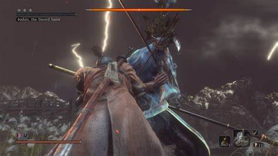

VideojuegosDesde que tengo memoria, soy amante de jugar videojuegos. Comencé jugando en el primer Xbox que me compró uno de mis tios instantaneamente me enganché, pasaba mucho tiempo jugando, me encantaba mucho mejorar, y pasar tiempo jugando con mis amigos. Tiempo después conocí los juegos de pc, lo que me abrió un mundo enorme de posibilidades como el multijugador online, el cual desde el inicio me atrapó la idea de jugar con personas incluso del otro lado del mundo. Pero sin embargo, mi mejor experiencia es con un genero de videojuegos llamado "SoulsLike", derivado de los juegos Dark Souls, el cual es un genero en el cual realmente te ponen las cosas dificiles. Y estando acostumbrado a que los juegos cada vez buscan ser mas fáciles para que todos los jugadores esten contentos, ese tipo de juegos se sienten como un verdadero reto, y muchas veces te frustras de fallar mil veces, pero finalmente te da la satisfacción de lograrlo y comienzas con la mentalidad de que puedes lograr todo lo que te propongas, esos juegos son mas una batalla contra ti mismo y tu mente que contra los enemigos. Es toda una experiencia personal. |
 |
Hacer videos en YouTubeSiempre me he considerado una persona bastante creativa, que le gusta plasmar las ideas más extrañas que hay en mi cabeza y eso lo he logrado a travez del diseño Gráfico y mas en concreto, con la creación de videos multimedia, me divierto mucho planeando las ideas, estructurando el contenido del video para hacerlo lo más entretenido posible. Pero sin embargo lo que más me divierte es editar los videos, me tardo horas haciendolo, horas que al final se veran reflejadas en unos cuantos minutos del video final, pero vale completamente la pena para mi. |
|
CaminarExisten pocas cosas en la vida que sean tan comunes pero al mismo tiempo me gusten tanto como caminar, es una actividad que hago todos los dias, ya que la escuela me queda bastante lejos de mi casa, pero disfruto cada momento haciendolo, me relaja mucho ya que puedo ir reflexionando sobre la vida mientras escucho música y al mismo tiempo disfruto del paisaje urbano, que con el tiempo aprendi a tomarle cariño, ya que hay que ser capacez en la vida de disfrutar de lo bonito que es la vida cotidiana, ya que hay cosas que hacemos a diario y es tan común que olvidamos que es algo especial, o dejamos de ver la belleza en ello. Caminar me enseñó que hay que valorar y ver lo bonito en las cosas cotidianas. |